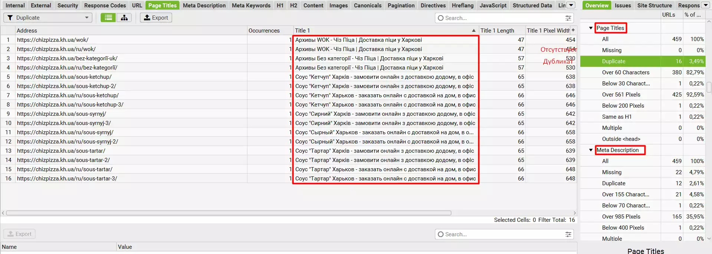
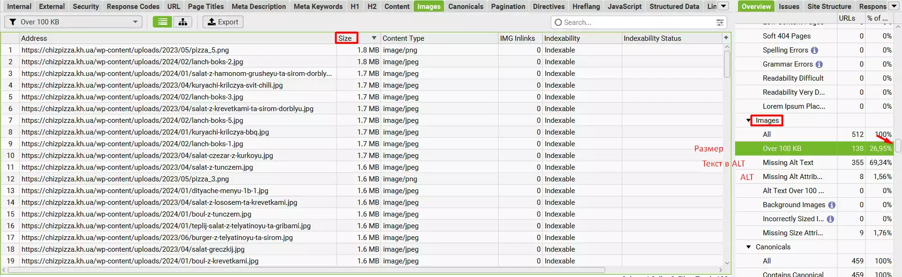
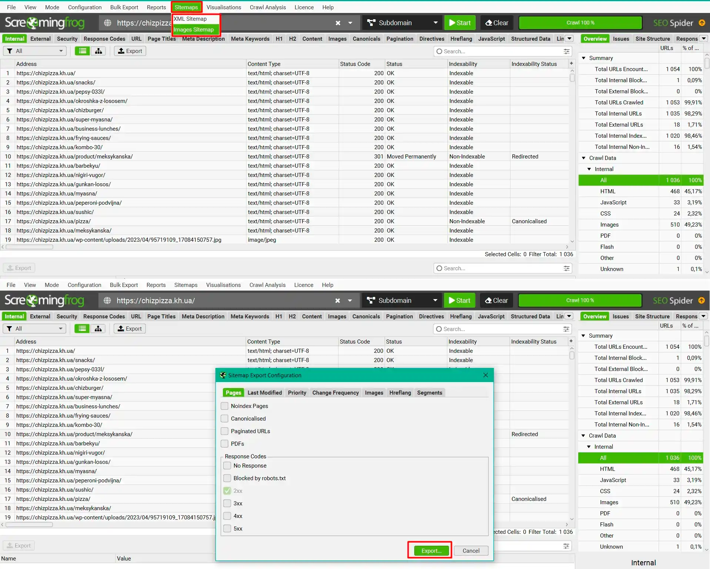

SCREAMING FROG ДЛЯ НАЧИНАЮЩИХ
В этой статье я собрал краткий мануал для начинающих SEО-специалистов, начинающих заниматься оптимизацией, в которой им поможет Screaming Frog. Я опишу самые главные функции, которые необходимы для анализа сайта, без лишней воды и ненужных функций.
Где скачать Screaming Frog?
Скачать бесплатную версию Скриминг Фрога можно на его официальном сайте, но при использовании вы сможете сканировать только до пятисот ссылок, а это очень мало. Лучше установите взломанную версию с rutracker.org, как это делают многие. Все инструкции по установке вы найдете на сайте файлообменника. Я использую версию 19.0.
Как сканировать сайт?
Итак, начнем сканировать сайт. Все очень просто, вставляем домен в верхнюю строчку в программе и нажимаем кнопку Start.

Бывают случаи, что сайт закрыл сканирование для таких программ, как Скриминг Фрог. В таком случае, в верхней панели мы нажимаем Configuration > User-Agent и в открывшемся окне выбираем Google (Desktop) и жмем OK. После этого нажимаем Start.

Далее, ждем, пока программа отсканирует весь сайт.
Что делать после сканирования сайта?
Мы отсканировали сайт и видим перед собой много панелей, столбцов и прочее. Сейчас я объясню самые нужные параметры, которые нам нужны.

Первое, это большая таблица с данными о ссылках, в ней мы можем найти самую необходимую информацию - код ответа (200, 300, 400, 500), title, description, H1. Столбцы можно выставлять в любом порядке, можете выставить, как у меня на предыдущем скриншоте. Также, нажав на название столбца мы можем отсортировать данные от А до Я, от Я до А, от большего к меньшему, от меньшего к большему.

На прошлом скриншоте я отсортировал Status Code по убыванию, и вы могли заметить, что на нашем сайте есть 404, 302 и 301 ссылки. И тут самый главный вопрос.
Где на сайте находится нужная ссылка?
Чтобы найти необходимую ссылку в Screaming Frog необходимо нажать на ссылку и в нижней панели выбрать Inlinks. Первый столбец - это страница, на которой находится битая ссылка.

Вот так работает это на практике.

Как отсортировать только страницы?
По предыдущим скриншотам вы заметили, что программа просканировала абсолютно все файлы, но нам необходима информация только о страницах сайта. Для этого нам понадобится боковая панель сайта, в Internal выбираем HTML и у нас сортируются только страницы.

Как посмотреть исходящие ссылки с сайта?
Далее, я вам покажу все функции боковой панели. В External нажимаем All и программа показывает все исходящие ссылки с нашего сайта. Здесь мы можем увидеть ссылки с нежелательными кодами ответов (300, 400, 500).

Чтобы узнать, где они находятся на сайте прочитайте выше под заголовком "Где на сайте находится нужная ссылка?".
Информация о ссылках на сайте
В боковой панели есть полезное свойство URL, оно показывает ошибки урла - латинские буквы, нижнее подчеркивание, большие буквы и так далее.

Информация о title и description
В боковой панели на вкладках Page Titles и Meta Description есть информация о тайтле и дескрипшене. Можно просмотреть отсутствующие метатеги, дубликаты, слишком короткие или слишком длинные.
Такие же данные можно узнать из вкладки H1 про заголовок H1.

Работа с изображениями
В боковой панели на вкладке Images находится фильтры, с помощью которых можно обнаружить изображения с большим весом, изображения без атрибута ALT, изображения без текста в атрибуте ALT и так далее.
Как выгрузить данные?
Когда вы нашли необходимые данные, то вы можете выгрузить их в Excel или Google Sheets для дальнейшей работы с ними. Для выгрузки нажмите Export. Далее придумайте название документа отличное от стандартного, затем выберите Type - Google Sheets, заранее подтвердив почту для выгрузки и нажмите Save and Open или просто Save.

Создать Sitemap
Есть админ-панели такие, как Wordpress или OpenCart, которые генерируют сайтмап сами, но если нет такой возможности, то нам поможет Скриминг Фрог. Необходимо в верхней панели нажать Sitemaps, далее выбрать XML Sitemap, если нужна карта страниц сайта, и Images Sitemap, если нужна карта изображений сайта. В открывшемся окне нажимаем кнопку Export.
Дерево сайта
В Скриминг Фроге есть возможность создать дерево сайта, это вам поможет понять вложенность страниц и категорий. Для этого нажмите Visualisations > Crawl Tree Graph. Есть несколько видов "деревьев", можете самостоятельно ознакомиться со всеми.

Самый главный секрет Screaming Frog
Перед тем, как писать эту статью, я прочитал два полных мануала по Скриминг Фрогу (Ссылка 1 и Ссылка 2), чтобы не пропустить какой-то пункт, и после прочтения открыл для себя новую информацию, которую не знал раньше. Когда освоите базовые навыки программы, то не останавливайтесь и читайте новые статьи и изучайте интерфейс сами.